This function is designed to automate and make efficient a relatively common task in some branches of science. The task of cross tabulating and displaying certain types of variables. It makes use of dplyr and ggplot2 to achieve those ends.
Imagine that you want to take two of the mtcars variables, for example am and cyl, and conduct a cross tabulation and then plot it. Since it’s the sort of thing I’m likely to do often seemed like a good candidate to write a function for. Then I decided that I might very well want the function to allow me to input more than two variables at a time. It would be very tedious to execute the command 25 times if I had 5 dependent variables and 5 independent variables and needed to fully cross them.
It provides visually appealing and sensibly labelled charts quickly and efficiently. It does some basic error checking and allows the user some choice as to exact style without having to know any underlying syntax or semantics.
Possible cases
The function is designed to handle four possible scenarios.
Take the user’s input and parse it into one of four known possibilities and then take appropriate action. The possibilities are:
- If both are
barevariables and found in the dataframe immediately print the plot - At least one of the variables is
bareand found in the dataframe (variable x) and the other is one or more column numbers (variable y) - At least one of the variables is
bareand found in the dataframe (variable y) and the other is one or more column numbers (variable x) - Both the variables were passed to us as numbers. Could be one or more numbers for either variable.
Example scenario … What makes us happy?
The documentation examples use the mtcars built-in dataset. It’s handy, convenient, and it’s installed by default. To actually show the function in action, however, I’m going to use a different dataset. Something that should allow you to better see the value of making plots of the crosstabs rather than simple tables. It also has the happy property of being much much larger than mtcars so we can see if there are lags in performance due to the number of rows.
Rather than provide my own or make anyone work too hard I selected that happy dataset that comes bundled with several R packages including productplots and GGally. From the description:
The data is a small sample of variables related to happiness from the general social survey (GSS). The GSS is a yearly cross-sectional survey of Americans, run from 1976. We combine data for 25 years to yield 51,020 observations, and of the over 5,000 variables, we select nine related to happiness.
We’ll load the library and take a quick look at the structure of the data.
library(productplots) str(happy) #> 'data.frame': 51020 obs. of 10 variables: #> $ id : num 1 2 3 4 5 6 7 8 9 10 ... #> $ happy : Factor w/ 3 levels "not too happy",..: 1 1 2 1 2 2 1 1 2 2 ... #> $ year : num 1972 1972 1972 1972 1972 ... #> $ age : num 23 70 48 27 61 26 28 27 21 30 ... #> $ sex : Factor w/ 2 levels "male","female": 2 1 2 2 2 1 1 1 2 2 ... #> $ marital: Factor w/ 5 levels "married","never married",..: 2 1 1 1 1 2 3 2 2 1 ... #> $ degree : Factor w/ 5 levels "lt high school",..: 4 1 2 4 2 2 2 4 2 2 ... #> $ finrela: Factor w/ 5 levels "far below average",..: 3 4 3 3 4 4 4 3 3 2 ... #> $ health : Factor w/ 4 levels "poor","fair",..: 3 2 4 3 3 3 4 3 4 2 ... #> $ wtssall: num 0.445 0.889 0.889 0.889 0.889 ...
We’ll be focusing on the non numeric variables. I certainly can’t claim to do a detailed analysis here but at least the questions will be fun I hope…
# who's happier by gender PlotXTabs(happy,happy,sex) #> Plotted dataset happy variables happy by sex
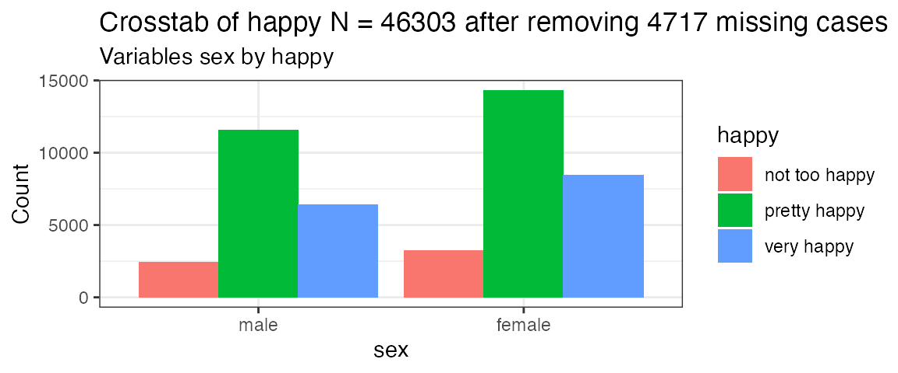
# same thing using column numbers and a stacked bar PlotXTabs(happy,2,5,"stack") #> Creating the variable pairings from dataframe happy #> Plot #1 happy with sex #> Plotting complete
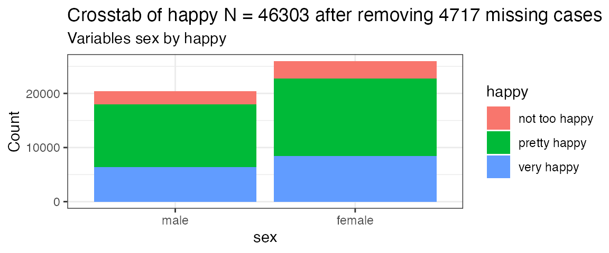
# happiness by a variety of possible factors as a percent PlotXTabs(happy, 2, c(5:9), plottype = "percent") #> Creating the variable pairings from dataframe happy #> Plot #1 happy with sex
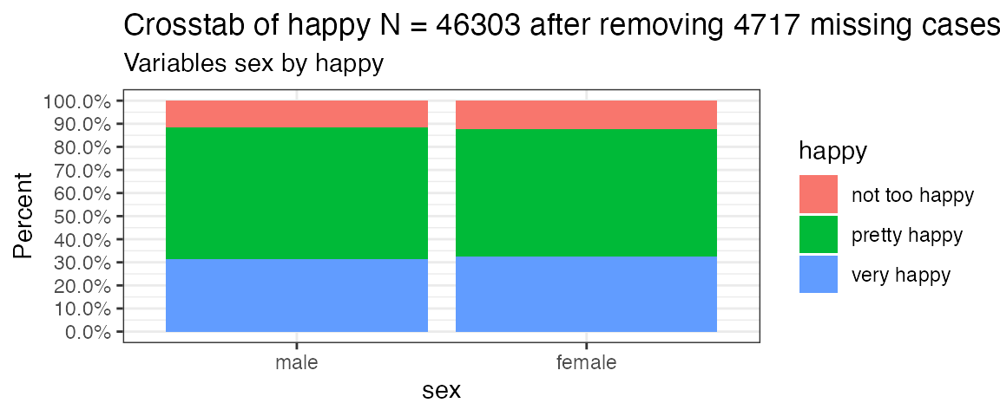
#> Plot #2 happy with marital#> Plot #3 happy with degree
#> Plot #4 happy with finrela
#> Plot #5 happy with health
#> Plotting complete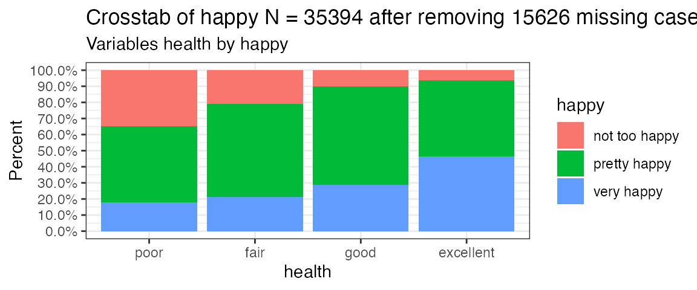
# turn the numbers around and change them up basically just showing all # the permutations PlotXTabs(happy, c(2,5), 9, plottype = "side") #> Creating the variable pairings from dataframe happy #> Plot #1 happy with health
#> Plot #2 sex with health
#> Plotting complete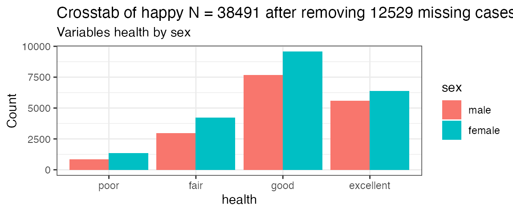
PlotXTabs(happy, c(2,5), c(6:9), plottype = "percent") #> Creating the variable pairings from dataframe happy #> Plot #1 happy with marital

#> Plot #2 happy with degree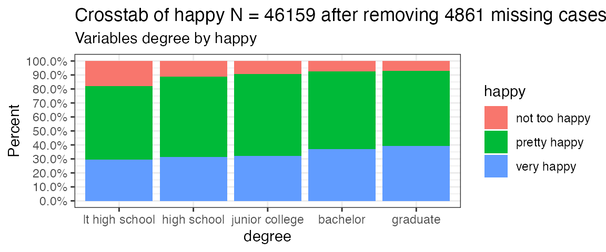
#> Plot #3 happy with finrela
#> Plot #4 happy with health
#> Plot #5 sex with marital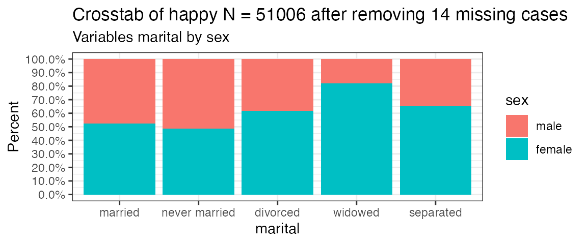
#> Plot #6 sex with degree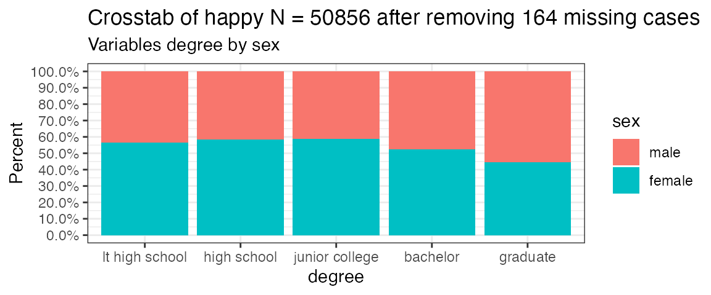
#> Plot #7 sex with finrela#> Plot #8 sex with health
#> Plotting complete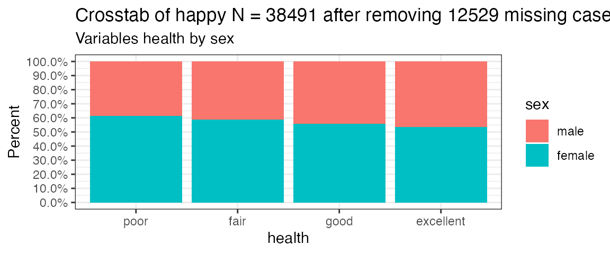
PlotXTabs(happy, happy, c(6,7,9), plottype = "percent") #> Creating the variable pairings from dataframe happy #> Plot #1 happy with marital

#> Plot #2 happy with degree
#> Plot #3 happy with health
#> Plotting complete
PlotXTabs(happy, c(6,7,9), happy, plottype = "percent") #> Creating the variable pairings from dataframe happy #> Plot #1 marital with happy
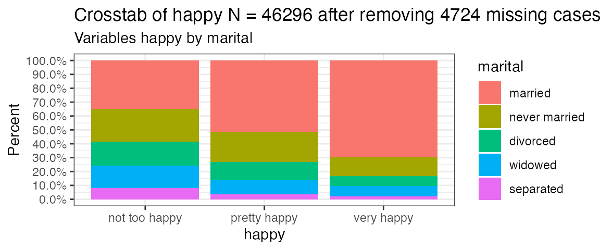
#> Plot #2 degree with happy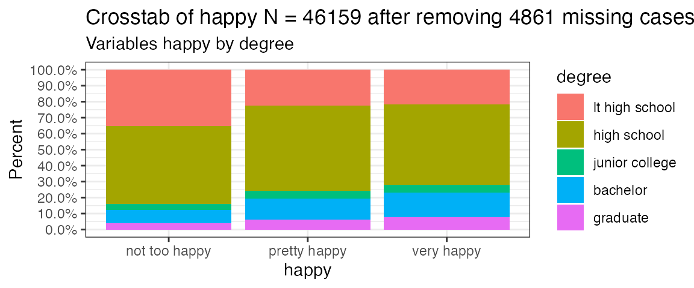
#> Plot #3 health with happy
#> Plotting complete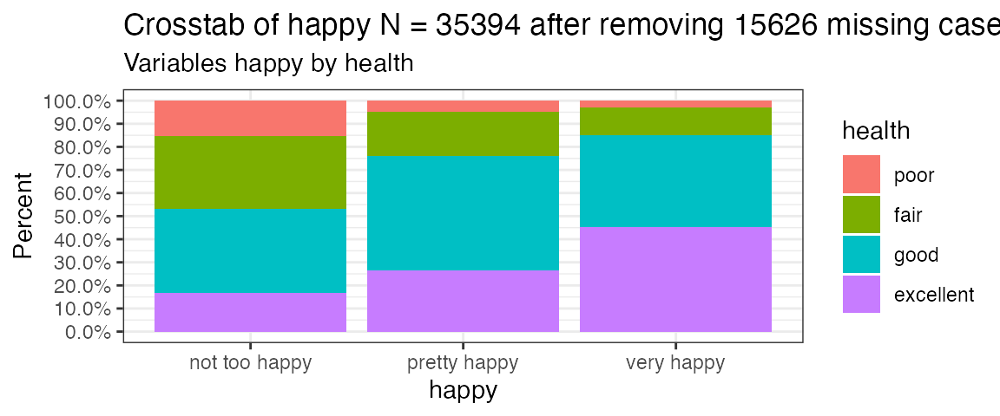
I hope you’ve found this useful. I am always open to comments, corrections and suggestions.
Chuck (ibecav at gmail dot com)
License

This work is licensed under a Creative Commons Attribution-ShareAlike 4.0 International License.
“He who gives up [code] safety for [code] speed deserves neither.” (via)